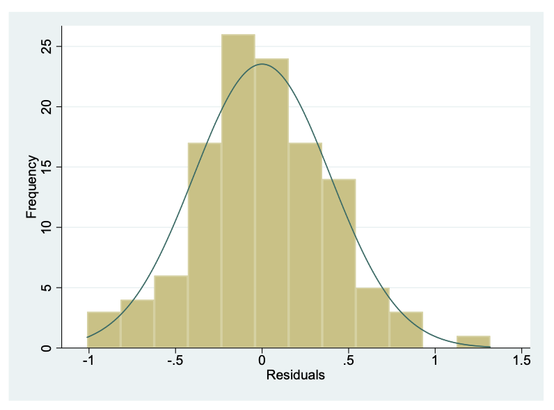

5 Correlation and linear regression
Learning objectives
By the end of this module you will be able to:
- Explore the association between two continuous variables using a scatter plot;
- Estimate and interpret correlation coefficients;
- Estimate and interpret parameters from a simple linear regression;
- Decide whether a regression model is valid;
- Test a hypothesis using regression coefficients;
- Outline the concept of multiple regression and its role in investigative epidemiology.
Readings
Kirkwood and Sterne (2001); Chapter 10. [UNSW Library Link]
Bland (2015); Chapter 11. [UNSW Library Link]
Acock (2010); Chapter 8.
5.1 Introduction
In Module 5, we saw how to test whether the means from two groups are equal - in other words, whether a continuous variable is related to a categorical variable. We often want to know how closely two continuous variables are related. For example, we may want to know how closely blood cholesterol levels are related to dietary fat intake in adult men. To measure the strength of association between two continuously distributed variables, a correlation coefficient is used.
We may also want to know how well one continuous measurement predicts the value of another continuous measurement. For example, we may want to know how well height predicts values of lung capacity in a community of adults. A regression model allows us to use one measurement to predict another measurement.
Although both correlation coefficients and regression models can be used to describe the degree of association between two continuous variables, the two methods provide very different statistical information. It is important to note that both methods only measures the strengths of an association between variables and does not imply a causal relationship.
5.2 Correlation
We use correlation to measure the strength of a linear relationship between two variables. Before calculating a correlation coefficient, a scatter plot should first be obtained to give an understanding of the nature of the relationship between the two variables.
5.2.1 Worked Example
The file Example_8.1.csv has information about height and lung function collected from a sample of 120 adults. A random sample of adults was approached to take part in the research study, but the response rate was low at 45%. Information was collected on height (cm) and lung function, which was measured as forced vital capacity (FVC). We can obtain a scatter-plot shown in Figure 5.1. This shows that as height increases, lung function also increases, which is as expected. One or two of the data points are separated from the rest of the data but are not so far away as to be considered outliers because they do not seem to stand out of other observations.
5.2.2 Correlation coefficients
A correlation coefficient (r) describes how closely the variables are related, that is the strength of linear association between two continuous variables. The range of the coefficient is from +1 to −1 where +1 is a perfect positive association, 0 is no association and −1 is a perfect inverse association. In general, an absolute (disregarding the sign) r value below 0.3 indicates a weak association, 0.3 to < 0.6 is fair association, 0.6 to < 0.8 is a moderate association, and \(\ge\) 0.8 indicates a strong association.
The coefficient is positive when large values of one variable tend to occur with large values of the other, and small values of one variable (y) tend to occur with small values of the other (x) (Figure 5.2 (a and b)). For example, height and weight in healthy children or age and blood pressure.
The coefficient is negative when large values of one variable tend to occur with small values of the other, and small values of one variable tend to occur with large values of the other (Figure 5.2 (c and d)). For example, percentage immunised against infectious diseases and under-five mortality rate.

The P value associated with an r value is an estimate of whether the correlation coefficient is significantly different from zero. However, a correlation coefficient that does not have a significant P value does not imply that there is no relationship because the correlation coefficient only tests for a linear association and there may be a non-linear relationship such as a curved or irregular relationship.
The assumptions for using a Pearson’s correlation coefficient are that:
- observations are independent;
- both variables are continuous variables;
- the relationship between the two variables is linear.
There is a further assumption that the data follow a bivariate normal distribution. This assumes: y follows a normal distribution for given values of x; and x follows a normal distribution for given values of y. This is quite a technical assumption that we do not discuss further.
There are two types of correlation coefficients– the correct one to use is determined by the nature of the variables as shown in Table 5.1.
| Correlation coefficient | Application |
|---|---|
| Pearson’s correlation coefficient: r | Both variables are continuous and a bivariate normal distribution can be assumed |
| Spearman’s rank correlation: rho | Bivariate normality cannot be assumed. Also useful when at least one of the variables is ordinal |
Spearman’s \(\rho\) is calculated using the ranks of the data, rather than the actual values of the data. We will see further examples of such methods in Module 9, when we consider non-parametric tests, which are often based on ranks.
Correlation coefficients are often presented in the form of a correlation matrix which can display the correlation between a number of variables in a single table (Table 5.2).
| Height | FVC | |
| Height | 1 | 0.70 P < 0.0001 |
| FVC | 0.70 P < 0.0001 |
1 |
This correlation matrix shows that the Pearson’s correlation coefficient between height and lung function is 0.70 with P<0.0001 indicating very strong evidence of a linear association between height and FVC. A correlation matrix sometimes includes correlations between the same variable, indicated as a correlation coefficient of 1. For example, \(Height\) is perfectly correlated with itself (i.e. has a correlation coefficient of 1). Similarly, \(FVC\) is perfectly correlated with itself.
This r value was calculated for the full data set of 120 adults who had heights ranging from 160 to 172cms. If the r value is calculated for the 60 adults with a height less than 165cms, it is much lower at 0.433 although significant at P=0.001. In general, r values are higher for a wider range of values on the x axis even though the relationship between the two variables remains the same.
Correlation coefficients are rarely used as important statistics in their own right because they do not fully explain the relationship between the two variables and the range of the data has an important influence on the size of the coefficient. In addition, the statistical significance of the correlation coefficient is often over interpreted because a small correlation which is of no clinical importance can become statistically significant even with a relatively small sample size. For example, a poor correlation of 0.3 will be statistically significant if the sample size is large enough.
5.3 Linear regression
The nature of a relationship between two variables is more fully described using regression. There are two principal purposes for building a regression model. The most common is to build a predictive model, for example in situations in which age and gender are used to predict normal values of characteristics such as lung size or body mass index. Normal values are the range of values that occur naturally in the general population.
The second purpose for using a regression model is for testing the hypothesis that there is a linear relationship between one or more explanatory variables and an outcome variable. For example, a regression model can be used to test the extent to which age predicts BMI or to test the hypothesis that two groups with a different dietary regime have significantly different BMI values after adjusting for age differences.
From Worked Example 8.1, we can be also plot a regression line through the scatter. Figure @ref(fig:scatter-plot-line) shows the data overlayed with the fitted regression line.

The line through the plot is called the line of ‘best fit’ because the size of the deviations between the data points and the line is minimised in the calculation. The distance between each data point and the regression line is called a ‘residual’.
5.3.1 Regression equations
The mathematical equation for the line explains the relationship between the two variables. The equation of the regression line is as follows:
\[y = \beta_{0} + \beta_{1}x\]
This line is shown in Figure 5.3 using the notation shown in Table 5.3.

| Symbol | Interpretation |
|---|---|
| \(y \) | Observed value of the outcome variable |
| \(x \) | Observed value of the explanatory variable |
| \(\beta_0\) | Intercept of the regression line |
| \(\beta_1\) | Slope of the regression line |
The intercept is the point at which the regression line intersects with the y-axis when the value of ‘x’ is zero. In most cases, the intercept does not have a biologically meaningful interpretation as the explanatory variable cannot take a value of zero. In our working example, the intercept is not meaningful as it is not possible for an adult to have a height of 0cm.
The slope of the line is the predicted change in the outcome variable ‘y’ as the explanatory explanatory variable ‘x’ increases by 1 unit.
An important concept is that regression predicts an expected value of ‘y’ given an observed value of ‘x’: any error around the explanatory variable is not taken into account. For this reason, measurements that can be taken accurately, such as age and height, make good explanatory variables.
5.4 Regression coefficients: estimation
Software is always used to estimate the regression equation for a set of data, using the method of least squares. This method estimates the intercept and the slope, and also their variability (i.e. standard errors).
5.5 Regression coefficients: inference
We can use the estimated regression coefficients and their variability to calculate 95% confidence intervals. Here, a t-value from a t-distribution with \(n - 2\) degrees of freedom is used:
- 95% confidence interval for intercept: \(b_0 \pm t_{n-2} \times SE(b_0)\)
- 95% confidence interval for slope: \(b_1 \pm t_{n-2} \times SE(b_1)\)
Note that as the constant (\(b_0\)) is not often biologically plausible, the 95% confidence interval for the constant is often not reported.
The significance of the estimated slope (and less commonly, intercept) can be tested using a t-test. The null hypotheses and the alternative hypothesis for testing the slope of a simple linear regression model are:
- H0: \(\beta_1 = 0\)
- H1: \(\beta_1 \ne 0\)
To test the null hypothesis for the regression coefficient beta_1, the following t-test is used:
\[t = b_1 /SE(b_1)\]
This will give a t statistic which can be referred to a t distribution with n − 2 degrees of freedom to calculate the corresponding P-value.
Table 5.4 shows the estimated regression coefficients for our working example.
| Term | Estimate | Standard error | t value | P value | 95% Confidence interval |
|---|---|---|---|---|---|
| Intercept | -18.9 | 2.19 | t=-8.60, 118df | <0.001 | -23.22 to -14.53 |
| Height | 0.14 | 0.013 | t=10.58, 118df | <0.001 | 0.11 to 0.17 |
From this output, we see that the slope is estimated as 0.14 with an estimated intercept of -18.87. Therefore, the regression equation is estimated as:
FVC (L) = − 18.87 + (0.14 \(\times\) Height in cm)
There is very strong evidence of a linear association between FVC and height in cm (P < 0.001).
This equation can be used to predict FVC for a person of a given height. For example, the predicted FVC for a person 165 cm tall is estimated as:
FVC = − 18.87347 + (0.1407567 \(\times\) 165.0) = 4.40 L.
Note that for the purpose of prediction we have kept all the decimal places in the coefficients to avoid rounding error in the intermediate calculation.
5.5.1 Fit of a linear regression model
After fitting a linear regression model, it is important to know how well the model fits the observed data. One way of assessing the model fit is to compute a statistic called coefficient of determination, denoted by \(R^2\). It is the square of the Pearson correlation coefficient \(r: r^2 = R^2\). Since the range of \(r\) is from −1 to 1, \(R^2\) must lie between 0 and 1.
\(R^2\) can be interpreted as the proportion of variability in y that can be explained by variability in x. Hence, the following conditions may arise:
If \(R^2 = 1\), then all variation in y can be explained by variation of x and all data points fall on the regression line.
If \(R^2 = 0\), then none of the variation in y is related to x at all, and the variable x explains none of the variability in y.
If \(0 < R^2 <1\), then the variability of y can be partially explained by the variability in x. The larger the \(R^2\) value, the better is the fit of the regression model.
5.5.2 Assumptions for linear regression
Regression is robust to moderate degrees of non-normality in the variables, provided that the sample size is large enough and that there are no influential outliers. Also, the regression equation describes the relationship between the variables and this is not influenced as much by the spread of the data as the correlation coefficient is.
The assumptions that must be met when using linear regression are as follows:
- observations are independent;
- the relationship between the explanatory and the outcome variable is linear;
- the residuals are normally distributed.
A residual is defined as the difference between the observed and predicted outcome from the regression model. If the predicted value of the outcome variable is denoted by \(\hat y\) then:
\[ \text{Residual} = \text{observed} - \text{predicted} = y - \hat y\]
It is important for regression modelling that the data are collected in a period when the relationship remains constant. For example, in building a model to predict normal values for lung function the data must be collected when the participants have been resting and not exercising and people taking bronchodilator medications that influence lung capacity should be excluded. In regression, it is not so important that the variables themselves are normally distributed, but it is important that the residuals are. Scatter plots and specific diagnostic tests can be used to check the regression assumptions. Some of these will not be covered in this introductory course but will be discussed in detail in the Regression Methods in Biostatistics course.
The distribution of the residuals should always be checked. Large residuals can indicate unusual points or points that may exert undue influence on the estimated regression slope.
The histogram of residuals from the model is shown in Figure 5.4. The residuals are approximately normally distributed, with no outlying values.

5.5.3 Critical appraisal
When reading the literature, it is important to be critical about how correlation coefficients are interpreted. It is a good idea to check if a scatter plot is shown to help interpret the relationship and to indicate if there are any potential outliers. Also, question whether the correlation coefficient has been calculated from a random sample and if not, what selected samples the value can be generalised to.
When regression is reported it is essential that the axes are correctly presented so that the equation is predictive. Thus, the explanatory variable must be presented on the x axis and the outcome on the y axis. It is also a good idea to check that all the assumptions are met. Outliers which result in a non-normal distribution of the residuals can severely bias the regression coefficients.
5.6 Multiple linear regression
In the above example, we have only used a simple linear regression model of two continuous variables. Other more complex models can be built from this e.g. if we wanted to look at the effect of gender (male vs. female) as binary indicator in the model while adjusting for the effect of height. In that case we would include both the variables in the model as explanatory variables. In the same way we can include any number of explanatory variables (both continuous and categorical) in the model: this is called a multivariable model. Multivariable models are often used for building predictive equations, for example by using age, height, gender and smoking history to predict lung function, or to adjust for confounding and detect effect modification to investigate the association between an exposure and an outcome factor.
Multiple regression has an important role in investigating causality in epidemiology. The exposure variable under investigation must stay in the model and the effects of other variables which can be confounders or effect-modifiers are tested. The biological, psychological or social meaning of the variables in the model and their interactions are of great importance for interpreting theories of causality.
Other multivariable models include binary logistic regression for use with a binary outcome variable, or Cox regression for survival analyses. These models, together with multiple regression, will be taught in PHCM9517: Regression Methods in Biostatistics.